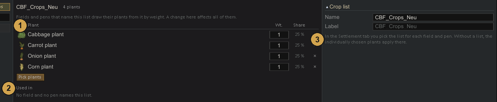

Loot
The Loot tab has four parts, switched at the top of the list: Lists, Tables, Containers and Crops. Changes reach the file only when you save.
Object lists
An object list names the structures a Loot or Object anchor may place: shelves, crates, market stalls.

- Structures of the list. Pick structures adds more.
- Table: the loot table that fills this structure. Mods that handle their own lootables show "by the mod".
- When emptied: what the structure becomes after it has been searched.
- Pawn inside on the right: a chance for someone hiding in it, hostile or of a faction.
- Used in: the pieces whose anchors use this list.
The preview behind the ... button in the Piece tab works the same way: changes there can be undone, and a Save button appears while the list has unsaved changes.
Loot tables
A loot table decides what comes out. Tables can draw from other tables, so small tables add up to big ones.

- Entries: an item, another table or a whole category of things. Each has a weight, a count, quality and condition. Share shows the chance that follows from the weights.
- + Item, + Table, + Category add entries.
- Rolls and Chance per roll on the right. If empty is what comes when nothing else does.
- Selected entry: kind, Up to tech for categories, stuff, depth and what happens If missing (skip, a fallback, or silver of equal value).
- Sample rolls the table once and shows the result.
Affects

Below the entries the tab shows where this table ends up: the tables that draw it, the settlements that reach it, and tiles of every piece that uses it. The anchors that use the table are highlighted in the tiles, the tooltip names them.
Containers
A container is a building that holds loot and changes its look once emptied, for example a stocked shelf that becomes an empty one.

- Full and empty image side by side.
- After emptying: the empty image, another building it Becomes, or it Vanishes.
- Edit container opens the container window to change it.
Crop lists
A crop list is a weighted list of plants for fields and pens. Change it once and every field that names it follows.

- Plants with weight and share. Pick plants opens the plant picker.
- Used in: the fields and pens that name this list. Click to open the settlement.
- Fields and pens pick the list in the Settlement tab, row Crop list.